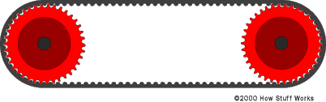
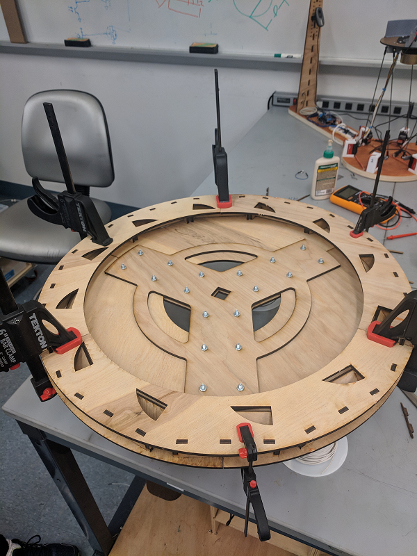
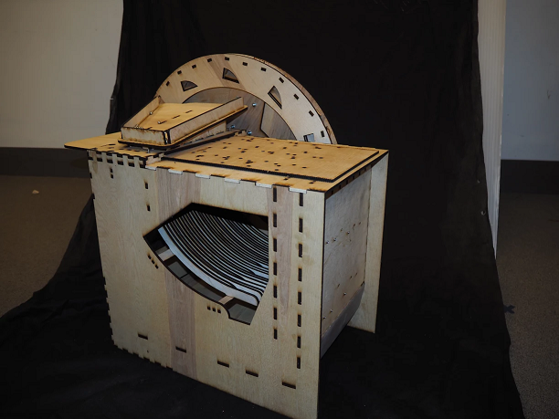

Goal:
Create a machine that plays music using marbles, inspired by the Wintergatan marble machine
- Capable of playing any song
- Aesthetically pleasing and mechanically complex
- stores songs using mechanical memory
Sprint 3
Addressing the issues from the last sprint:
Our top priority for this sprint was fixing the wheel grip issue from the last sprint. If we do not have a song sheet feeding in on its own, we do not have a product.
Beyond that, we wanted to Manufacture a prototype that:
- Recycles marbles after they hit pipes
- Can play variable note durations
- Can play an entire octave of notes
Fixing Grip Issues:
After experimenting with wheels and strings as methods of driving the sheet, we decide that neither are sufficient for our purposes, with wheel not getting a good grip and the string being too jerky and hard to control. Consequently, in sprint 3 we switched to a rack and pinion system to control the sheet, as shown below.

This enables us to both get a better grip on the sheet as well as control it with more spatial precision.
Recycling Marbles:
Next, we focussed on our next goal of recycling marbles so the machine can keep playing without having to be reloaded. Thi requires both marbles to be routed to an appropriate spot after hitting pipes, for marbles to be brought back to the top and subsequently be loaded into the reservoir.
The marble routing was trivial, we simply angled our bottom plate and added ramp so all the marbles would collect in a bottom corner of the machine.

The next step was more difficult. We needed a good way to bring the marbles back to the top at a fast enough rate that they could keep up with a song sheet. The two likely option are either a belt (possibly magnetic) that would take marbles back up to the top and a water wheel that would keep the marbles in compartments that release them at the top. As you can see from the picture below, we ended up going with the wheel due to its high marble capacity… and it just looks so cool. 
After the wheel take the marbles back up, it deposits them into a collection tray that feed back into the reservoir to be used again.
Since the CAD was designed in an intelligent way, scaling up to an octave was trivial. But since we had to recut all parts of the device we did not have enough time to solve our third goal of variable song sheet speed. Instead we leave room extra space in the cut sheet for longer notes.
Finally, here is the final device assembled!
Looks impressive doesn’t it? Good, cause it doesn’t work.
Unfortunately after finally assembling the device at the end of sprint three, we found that it did not play beautiful melodies like we hoped for 3 big reasons:
- We cut the ramps on the inside out of the wrong material, so we had to sand them down to get them to fit. This imprecise sanding caused variability in ramp position which led to marbles missing their notes
- Since we were so busy with fabrication and assembly we took a shortcut in mounting the pipes, holding them all at the same points rather than at ¼ and ¾ points along the pipe (the points that cause the best resonation). This caused some pipes to resonate very poorly and therefore be almost inaudible in the song.
- Due to size and position of some of the dividers in the marble reservoir, marbles would get caught on each other. This caused marbles to not fall into some holes on the sheet and therefore not be represented in the song.
Additionally, the mechanism to reroute marbles to the top was non-functional for 3 reasons:
- The collection ramps at the bottom of the machine were too shallow so marbles would not roll down correctly
- We could not get the wheel to turn with the stepper motor we had, due to it requiring more current and voltage than we could supply
- The marbles fell out of our wheel at the wrong time and would not get caught to get rerouted into the feeding mechanism.